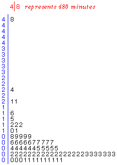
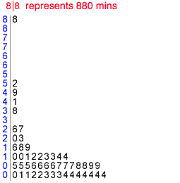

Outliers
Values that are considerably larger or smaller than the bulk of the data are called outliers.
Detection of outliers is particularly important. An outlier may have been incorrectly recorded, or there may have been other anomalous circumstances associated with it. Outliers must be carefully checked if possible. If anything atypical can be found, outliers should be deleted from the data set and their deletion noted in any reports about the data.
Health of newborn calves
|
As part of a study of newborn calves at the author's university, a researcher observed several births and recorded the time it took each calf to get onto its feet after birth. The stem and leaf plot on the right displays these times for Friesian calves. One calf took 8 hours to stand — more than double the time for any other calf. What was different about this calf? Further study showed that it had the lowest birth weight of the calves, but it was healthy and did survive (unlike some of the other calves in the study). |
 |
Outliers and skew distributions
An extreme data value that stands out from the rest of the data does not necessarily indicate that there is a mistake in the data or something unusual about the individual. Our interpretation of the extreme value should also take into account the shape of the distribution of values for the rest of the data.

Storm duration
The stem and leaf plot below shows the durations (in minutes) of the first 50 storms in the 1983/4 rainy season in the Bvumbwe catchment in Malawi.

One storm lasted much longer than the others (880 minutes). It is certainly worth checking the records for this storm (was the duration perhaps really 88 minutes?). However the value is not necessarily a mistake.
Most storms are short, with durations less than 100 minutes, so the longest rows of leaves are at the bottom of the stem and leaf plot. There are fewer storms lasting 100-200 minutes, fewer still of 200-300 minutes and this pattern continues, with the frequency of storms decreasing steadily up the stem and leaf plot. This shape of distribution is called a skew distribution, as opposed to a symmetric distribution whose tails decrease at similar speed on both sides of the peak density.
Perhaps this 'outlier' is a continuation of the pattern into the tail of the distribution and is just a long storm that could be expected once every hundred or so storms.